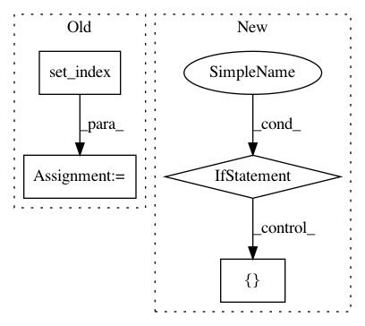

6bd4147eae6085142288b355660c250e8184d62f,pudl/outputs.py,,generation_eia923,#Any#Any#Any#Any#,751
Before Change
pu_eia["report_date"] = pd.to_datetime(pu_eia["report_date"])
// Group g_df annually (creat the datetimeindex to do so)
g_df = g_df.set_index(pd.DatetimeIndex(g_df["report_date"]))
gb = g_df.groupby(by=["plant_id", pd.TimeGrouper(
"AS"), "generator_id", "prime_mover"])
g_df = gb.agg({"net_generation_mwh": np.sum})
g_df = g_df.reset_index()
// Merge annual plant/utility data in with the more granular dataframe
out_df = g_df.merge(pu_eia, on=["plant_id", "report_date"])
After Change
df_year=pu_eia,
on=["plant_id"])
if freq is None:
out_df = out_df.drop(["id"], axis=1)
// These ID fields are vital -- without them we don"t have a complete record
out_df = out_df.dropna(subset=[
"plant_id",
"plant_id_pudl",
"operator_id",
In pattern: SUPERPATTERN
Frequency: 4
Non-data size: 4
Instances
Project Name: catalyst-cooperative/pudl
Commit Name: 6bd4147eae6085142288b355660c250e8184d62f
Time: 2017-11-16
Author: cgosnell@catalyst.coop
File Name: pudl/outputs.py
Class Name:
Method Name: generation_eia923
Project Name: QUANTAXIS/QUANTAXIS
Commit Name: 4113a6a3be19167a8c551f8ae20e849ac851e52c
Time: 2019-03-25
Author: zhongjy1992@outlook.com
File Name: QUANTAXIS/QAFetch/QAQuery.py
Class Name:
Method Name: QA_fetch_index_day
Project Name: etal/cnvkit
Commit Name: 6e6ebe4fa45fde3b666a624ddd7d735974081937
Time: 2015-07-06
Author: eric.talevich@gmail.com
File Name: cnvlib/gary.py
Class Name: GenomicArray
Method Name: add_array
Project Name: QUANTAXIS/QUANTAXIS
Commit Name: 5b4d04de17457286fe4e5f3e0e8295db42d0f064
Time: 2020-04-05
Author: 11652964@qq.com
File Name: QUANTAXIS/QAFetch/QAQuery.py
Class Name:
Method Name: QA_fetch_index_min